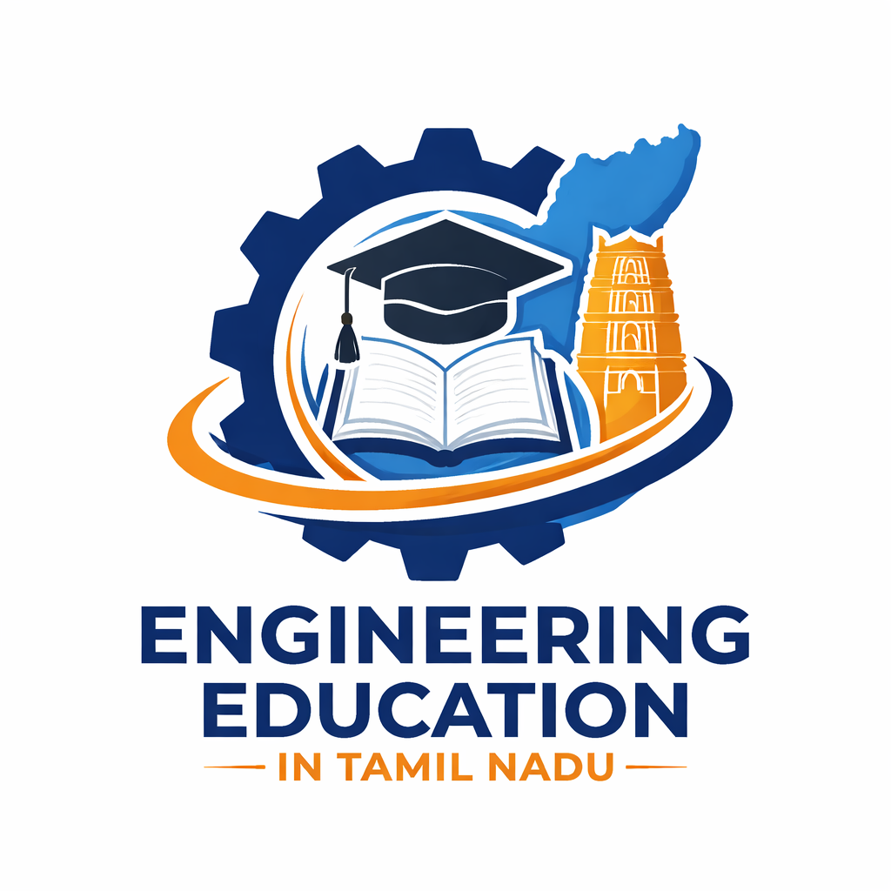
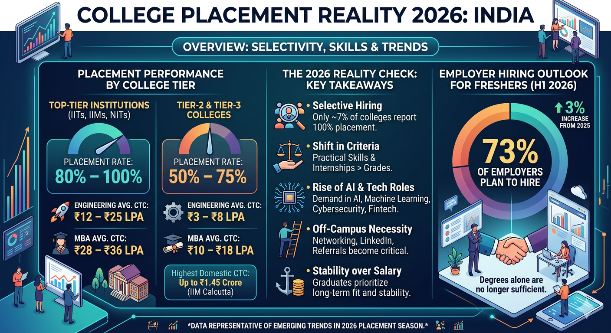

In many colleges today, placements have become one of the biggest concerns for students. After spending several years studying and investing significant time and money in their education, students expect their institutions to provide opportunities that help them start their careers. However, the reality is often different. Some colleges struggle to attract reputed companies, and the number of job opportunities available during campus placements can be limited. This situation creates frustration and uncertainty among students who depend heavily on these opportunities to secure their first job. Some students believe colleges should organize better training programs, invite more companies, and update the curriculum according to industry needs. Others believe students themselves must improve their practical skills, communication abilities, and technical knowledge to meet industry expectations. Ultimately, placement success is a shared responsibility between colleges and students. Institutions must build stronger industry connections while students must actively develop the skills required in today’s competitive job market.
Engineering education plays an important role in shaping students’ careers, but many colleges face several challenges that affect the quality of learning and job opportunities.
In many cases, students complete their degrees but still struggle to find suitable jobs. This situation happens due to different reasons related to both the college system and the students themselves. Lack of practical training, skill development, and proper guidance can create a gap between education and industry requirements. Therefore, it is important to understand the issues from both sides.
Some colleges bring very few companies for recruitment. Students often feel opportunities are limited.
Students graduate with theory knowledge but lack industry-ready practical experience.
Technology evolves quickly but some colleges still teach outdated tools and methods.
Students also share responsibility for the problems in their careers. Many students do not take their studies seriously during college and get easily distracted by entertainment, social media, or unnecessary activities. Instead of improving their technical knowledge and communication skills, some depend only on passing exams. Lack of self-learning, poor time management, and low interest in skill development reduce their chances of getting good jobs. If students focus more on learning practical skills and improving themselves, they can create better opportunities even beyond college placements.
If you have questions or suggestions about placements, feel free to reach out.
📞 Phone: +91 98765 43210
📧 Email: campusreality@email.com
📍 Address: Chennai, Tamil Nadu, India